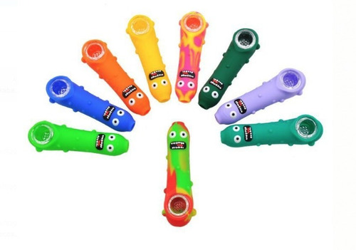

Producto:
Pipa Incredibowl m420
Tamaño:
11cm
Descripcion:
Ganadora 18 veces de la cannabis cup a la mejor pipa del mundo. Es la primera pipa con un sistema diseñado exclusivamente para fumar marihuana. Una válvula frontal permite controlar con precisión la cantidad de humo
en cada inhalada. Su cuerpo es de policarbonato, por lo que literalmente es irrompible

Producto
jarbong
Tamaño:
36cm
Descripcion:
JarBong es un bong impreso en 3d el cual tiene características modulares, personalizables, transportable y sobre todo durable ya que junto un frasco de vidrio universal de un litro se transforma en un extraordinario
bong, el cuál te acompañará en tus mejores momentos y viajes dentro de la galaxia.

Producto:
Moledor High Voltage
Tamaño:
55mm
Descripcion:
Este moledor cuenta con su estructura hecha de aluminio, el cual lo hace triturar a la perfección su contenido.

Producto
Bong Bukket
Tamaño:
91.5mm * 110.5mm
Descripcion
Bong Bukket es la nueva novedad. Su cuerpo en forma de acordeón lo convierte en un gran quemador de marihuana. Ideal para personas que quieran probar cosas nuevas. Su cuerpo es totalmente de plástico resistente.

Producto
Nautilus Bubbler
Tamaño:
55mm
Descripcion:
Nautilus Bubbler es un mini bong de silicona. Ideal para llevarlo a cualquier lugar.

Producto
Pipa Silicona
Tamaño:
55mm
Descripcion:
Ideal para llevar a cualquier parte que tu vayas